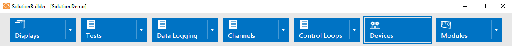
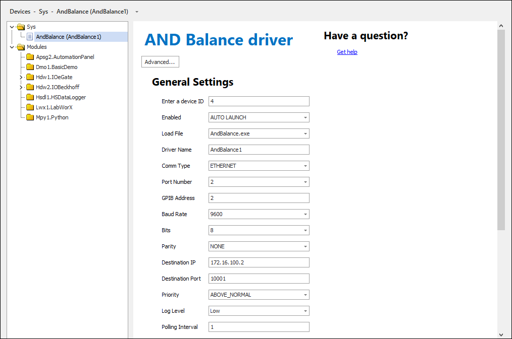

iTest User's Guide
The Devices editor allows you to add, modify, and delete various devices. To access this editor, select the Devices menu option in SolutionBuilder.
Devices Menu Option

To add or remove devices, right-click in the left pane and select the Add or Remove option. When adding new devices, the Add Device dialog displays. This dialog allows you to specify the device to add as well as its instance.
Add Device Dialog
Click OK to add the device. Its editor will display in the right pane. For information on how to configure the device, refer to its help documentation in the $SYSTEMDIR\Help\Drivers folder.
Devices Editor

When removing devices, you will be prompted to confirm the deletion for the selected device instance. Click Yes to confirm the deletion or No to cancel.
Delete Selected Device